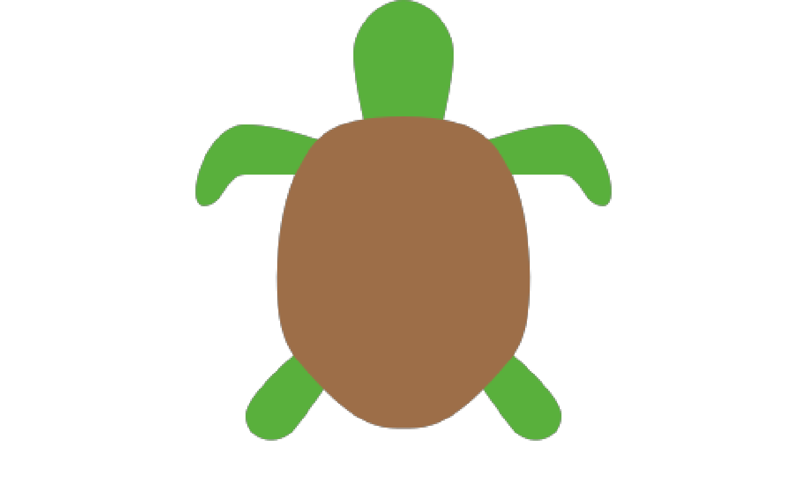
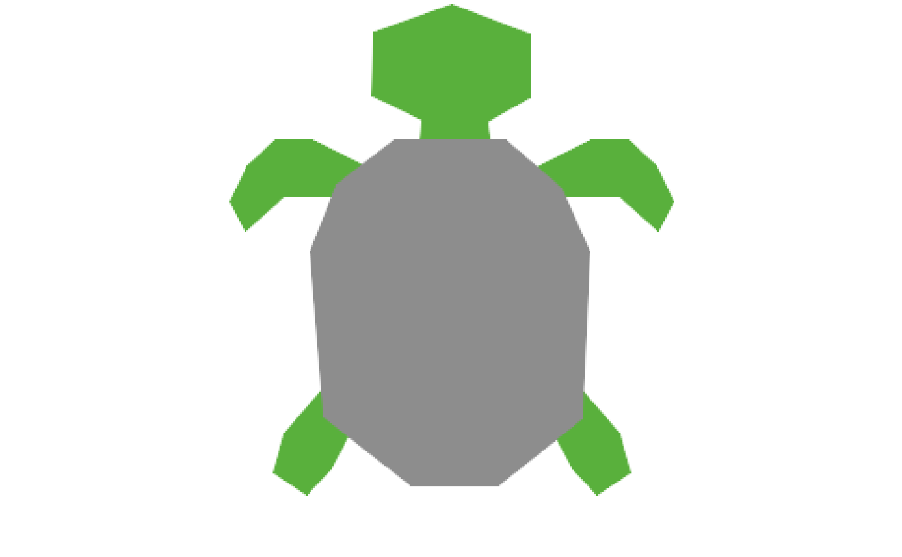
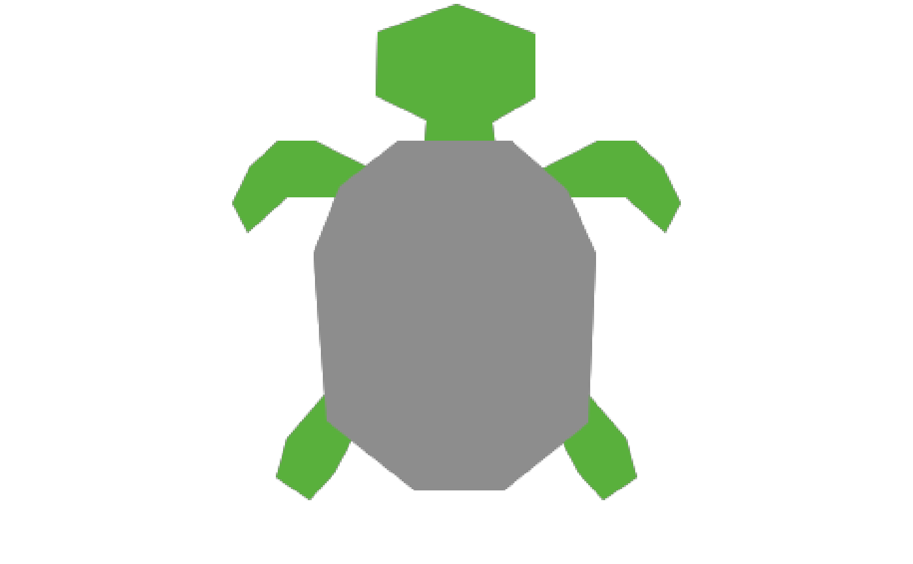

get_netlogo_shape() downloads NetLogo shapes from the
LogoShapes project on GitHub.
The collections and shapes available for download can be found in the
LogoShapes project
svg
directory. Refer to the
LogoShapes documentation for
more information about the different collections.
Note: This function requires an active internet connection and the
httr2 package.
Usage
get_netlogo_shape(
shape,
collection = "netlogo-refined",
dir = tempdir(),
user_agent = "logolink <https://CRAN.R-project.org/package=logolink>",
auth_token = Sys.getenv("GH_TOKEN")
)Arguments
- shape
A
charactervector indicating the names of the shapes to download.- collection
(optional) A
characterstring indicating the collection of shapes to download from (default:"netlogo-refined").- dir
(optional) A
characterstring indicating the directory where the shapes will be saved (default:tempdir()).- user_agent
(optional) A
characterstring indicating the user agent to use for the GitHub API requests. (default:"logolink <https://CRAN.R-project.org/package=logolink>").- auth_token
(optional) A
characterstring indicating a GitHub Personal Access Token (PAT) for authentication with the GitHub API. This is useful when dealing with rate limits. (default:Sys.getenv("GITHUB_PAT")).
Examples
# \dontrun{
library(fs)
library(magick)
#> Linking to ImageMagick 6.9.12.98
#> Enabled features: fontconfig, freetype, fftw, heic, lcms, pango, raw, webp, x11
#> Disabled features: cairo, ghostscript, rsvg
#> Using 4 threads
# }
# \dontrun{
shape <- get_netlogo_shape("turtle")
file_size(shape)
#> 1.06K
shape |> image_read_svg() |> image_ggplot()
#> Warning: `aes_string()` was deprecated in ggplot2 3.0.0.
#> ℹ Please use tidy evaluation idioms with `aes()`.
#> ℹ See also `vignette("ggplot2-in-packages")` for more information.
#> ℹ The deprecated feature was likely used in the magick package.
#> Please report the issue at <https://github.com/ropensci/magick/issues>.

# }
# \dontrun{
shape <- get_netlogo_shape("turtle", collection = "netlogo-simplified")
file_size(shape)
#> 771
shape |> image_read_svg() |> image_ggplot()

# }
# \dontrun{
shape <- get_netlogo_shape("turtle", collection = "netlogo-7-0-3")
file_size(shape)
#> 785
shape |> image_read_svg() |> image_ggplot()

# }